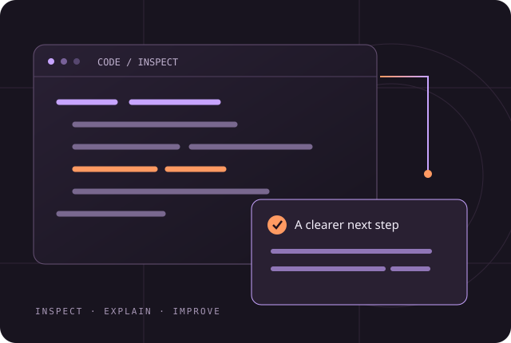

Scanner
Python files pass through the original AST analysis. Other languages use the original pattern rules.
Your code audit program, ready to explore. Run the scanner, inspect the source, and follow every change.
Launch the audit →
Load the original example or paste a file. Python runs locally in your browser. Your code is analysed, never executed.
First use downloads the Python runtime. Static checks, supported Python fixes and report downloads need no API key.
Python files pass through the original AST analysis. Other languages use the original pattern rules.
Focused Python transformations propose supported fixes and preserve valid syntax.
The browser checks syntax and rescans findings. The complete Python program also has its original agent reviewer.
Nebius AI reasoning, repository cloning and Git writes require the full Python setup and credentials. They are not enabled in this public browser adaptation.
All original interface, engine, agent, test, benchmark, documentation and configuration files. The downloadable ZIP is unchanged.
Loading source…Download and extract the ZIP, open the program folder, and install its requirements in a virtual environment.
Get the complete program · ZIP ↗python -m venv .venv # Activate your virtual environment pip install -r requirements.txt streamlit run app/main.py
Requires Python 3.11+. Remote repositories require Git. Set NEBIUS_API_KEY locally to enable AI reasoning; never publish a real API key.